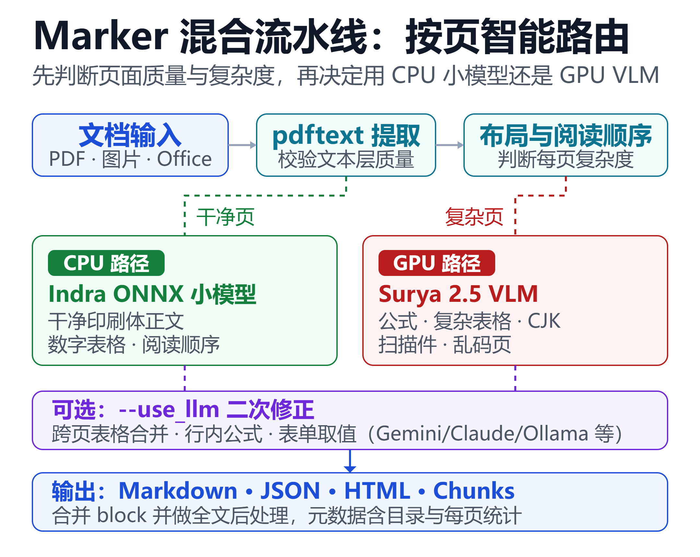
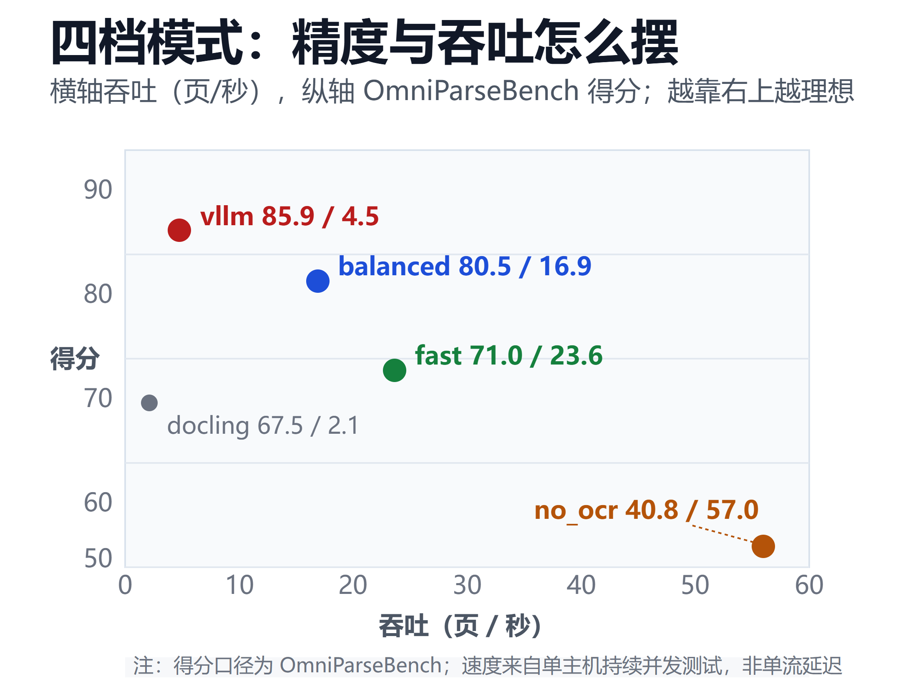

精度不打折、速度提 5 倍：Marker 2 如何重写 PDF 解析流水线
一个"既要又要"的数字
文档解析领域长期有个默认的取舍：要么精度高但慢，要么快但精度崩。
2026 年 7 月，Datalab 发布的 Marker 2 把这条规则撕开了一道口子。在 Allen AI 的第三方基准 olmOCR-bench 上，它的 balanced 模式拿到 76.0 分，单张 B200 GPU sustained 吞吐 2.9 页/秒。
同场竞技的 MinerU pipeline 后端得分 72.7，但只有 0.54 页/秒。Docling 得分 50.3，吞吐 2.1 页/秒。也就是说，Marker 2 在精度更高的同时，把速度做到了 MinerU 的 5.4 倍。
更反常识的是它的另一档。纯 CPU、不调用任何视觉模型的 --disable_ocr 模式，能跑到 23.7 页/秒，得分仍有 43.6。而最新 README 用自建的 OmniParseBench 口径给出的数字更激进：fast 模式 71.0 分 / 23.6 页/秒，no_ocr 模式 57.0 分 / 40.8 页/秒——后者的速度是 docling 的二十多倍。
这套"精度与速度不再二选一"的打法，靠的不是堆更大的模型，恰恰相反，是把大模型用得更少、更精准。
为什么 PDF 是 RAG 的第一道坎
做 RAG 的人有个心照不宣的痛点：绝大多数问答幻觉、检索失效、信息缺失，根源不在向量库、不在嵌入模型，而在 PDF 解析这一环。
PDF 格式诞生三十多年来服务的是打印机，它存储的是"在第几行第几列落一滴墨"，而不是"这是第几章第几段"。于是：
- 双栏论文的文本层按排版顺序抽取，读出来左右栏串行
- 表格被摊平成一堆没有语义的数字，行列关系全丢
- 公式在文本层里变成乱码或干脆消失
- 扫描件只有像素、没有文本层，常规提取返回空字符串
一旦在解析阶段变成"文字垃圾"，后续所有优化都于事无补。这就是所谓的"垃圾进，垃圾出"。
Marker 的思路是把文档解析当作计算机视觉问题，而不是文本解析问题——先把页面当图像理解结构，再决定用哪种方式读文字。
出身：一个开源工具长成一家公司
Marker 出自 Datalab，一家总部位于纽约布鲁克林的文档智能公司，2024 年 6 月成立。创始人 Vik Paruchuri 是编程学习平台 Dataquest 的创始人，此前把 Marker 做到 Hacker News 首页，三天涨了 3400 颗星。
公司的融资规模不大：种子轮 350 万美元，由 Pebblebed 领投，Peak XV 与 Balaji Srinivasan、Hugging Face 创始成员等天使参投。但客户名单很硬：Anthropic、Harvard、Stanford、MIT 都在用。
Datalab 的产品矩阵是一条清晰的递进路线：
| 项目 | 定位 |
|---|---|
| Marker | 文档转换流水线 |
| Surya | OCR 与布局识别 |
| Chandra | 全页 OCR 大模型 |
| Indra | 百万参数 CPU OCR |
Marker 负责把各种格式转成结构化输出，Surya 提供底层的 OCR 与布局能力，Chandra 是面向最难文档的旗舰模型，Indra 则是能在普通 CPU 上跑的极轻量模型。四个开源项目合计超过 76,000 颗星。
这条路线也解释了 Marker 的商业模式：开源工具负责建立技术信誉和用户入口，托管的 Datalab API 负责变现。
核心：混合流水线，按需调用视觉模型
Marker 2 的关键设计，是不再用一条固定路径处理所有页面。
它先判断每页的文本层质量与版式复杂度，再把不同页面路由到不同的处理路径。整个流程可以拆成六步：
- 用
pdftext提取 PDF 内嵌文本，同时校验文本层完整性与脚本覆盖度 - 检测页面布局与阅读顺序：干净数字页用 CPU 上的 Indra ONNX，扫描件或复杂页用 Surya VLM
- 按模式决定每页走文本层、轻量 OCR 还是全页 VLM
- 数字表格在 CPU 上用启发式规则与 OrderNet 的 table head 重建，低置信度的回退到 VLM
- 可选地用外部 LLM 做二次修正
- 合并 block 并做全文后处理

上图的要点在于：VLM 只在必要的地方被调用。干净的印刷体正文用文本层加 CPU 小模型就够了，公式、复杂表格、中日韩等非拉丁文字、扫描或乱码页面才交给 GPU 上的 Surya 2.5 VLM（参数量仅 0.69B）。官方把这句话写进了 README：只在必要处调用 VLM，既提速又保精度。
这正是它区别于 Docling 传统流水线、也区别于 Chandra 这类全页 VLM 的地方——它是一个按需调度的混合系统，而不是一个模型。
四档模式：把选择权交给硬件条件
Marker 2 把质量与速度的取舍显式拆成四档，默认按设备自动选择：GPU 上走 balanced，CPU/MPS 上走 fast。
| 模式 | 得分 | 吞吐 |
|---|---|---|
| vllm | 85.9 | 4.5 页/秒 |
| balanced | 80.5 | 16.9 页/秒 |
| fast | 71.0 | 23.6 页/秒 |
| no_ocr | 40.8 | 57.0 页/秒 |
（表格数据来自官方最新 OmniParseBench 口径；olmOCR-bench 口径下 balanced 为 76.0、fast 为 66.6）
各档的行为差异：
no_ocr：只用 PDF 文本层，零 OCR 调用，速度天花板，适合纯数字原生文档fast：CPU 上的 Indra ONNX 做布局与行级 OCR，无需推理服务，笔记本和 CI 都能跑balanced：GPU 默认档，干净页留在 CPU，公式、表格、非拉丁文字路由到 VLMvllm：每一页都跑全页 Surya VLM，精度最高，适合老旧扫描、密集公式、手写体

上图把四档模式放到同一张精度—吞吐坐标系里：右上角是理想区。balanced 之所以被设为 GPU 默认档，是因为它落在一个相当罕见的"高精度、高吞吐"象限。
这里有个必须知道的细节：Math 类测试对模式极其敏感。在 olmOCR-bench 的 arXiv math 分类里，vllm 得 87.0，balanced 得 83.9，而 fast 掉到 23.4、no_ocr 直接是 0.0。原因很简单——PDF 文本层无法表达数学公式，不走 VLM 就必然丢失。
换句话说，模式选错，文档不是"差一点"，而是"整类信息归零"。
吞吐量是怎么堆出来的
Marker 2 把吞吐从"单流约 0.3 页/秒"拉到"持续 2.9 页/秒"，靠的不是模型变小，而是架构调整。
传统的多进程方案里，每个 worker 各自加载一套模型，显存被重复占用，并发度被单进程显存卡死。Marker 2 改成：
- 多个轻量的 CPU worker 共享同一个 Surya 推理服务
- 父进程统一在 workers 之间预算 VLM 并发额度
- 吞吐随服务端容量扩展，而不是随单进程显存扩展
这带来一个工程上的直接好处：批量转换时，你可以把 workers 数量调高，让 CPU 预处理与 GPU 推理重叠，而不必担心显存爆炸。遇到 OOM，把 --workers 1 调小即可。
对 1000 份文档的单机批量任务，官方给的命令非常朴素：
marker /folder --output_dir out
它会自动起一个 vLLM 服务、按 CPU 核数配 worker 池、把并发预算给 GPU。多卡机器用 VLLM_GPUS=0,1,2,3 指定，多机用 --num_chunks 与 --chunk_idx 分片。
Benchmark 要看，但别只看
Marker 的每份基准表都标注了来源，这点值得肯定。但把数字直接搬进选型决策，有三个坑。
第一，所有数字都是 Datalab 自己跑的。 olmOCR-bench 是 Allen AI 的第三方基准，但分数与吞吐都是 Datalab 的执行结果。好在仓库里开源了完整的复现脚本（包含 Docling、MinerU、LiteParse 的 runner），可以在自己的硬件上重跑。
第二，不同基准的排序会打架。 Datalab 自己发文讲过这件事：某个模型在 ParseBench 排第一，在 OmniParseBench 排最后；另一个模型正好相反。原因包括评分口径、ground truth 来源、厂商专用 prompt 等。文章里那句提醒很到位——一个分数在你知道它测什么之前，没有意义。
第三，分数接近时不要过度解读。 olmOCR-bench 上已有五个模型挤在 83.3 到 87.6 之间，差距落在噪声区间。真正该做的是按自己的文档类型切片：扫描件、密集表格、数学公式、中文——每类单独测。
对于中文场景还要多一句：Marker 支持 90+ 语言，OmniParseBench 也覆盖 92 种语言，但在多项第三方对比中，中文表格与公式的精度通常仍由 MinerU 领先。这不是"谁更好"的问题，而是训练数据分布的差异。
竞品横评：Docling、MinerU 与 Marker
三款主流开源解析器，设计初衷完全不同。
Docling 出自 IBM Research，现属 LF AI & Data 基金会。它是企业通用型选手：MIT 许可、纯 CPU 流畅运行、支持音频与邮件等格式、原生对接 LangChain 与 LlamaIndex。它的短板是精度与吞吐都不拔尖。
MinerU 2.5 出自上海 AI 实验室，是高精度专业选手：自研 1.2B VLM，在表格、公式、中文场景表现突出，支持 CPU/GPU 双后端。短板是高精度模式的吞吐偏低。
Marker 是高吞吐极速选手：混合调度让它在 GPU 上做到断层领先的吞吐，LLM 兜底能处理复杂场景。短板是老旧扫描件与极复杂嵌套表格。
| 工具 | 精度定位 | 许可证 |
|---|---|---|
| Docling | 通用、合规 | MIT |
| MinerU 2.5 | 中文/公式强 | 附条件 Apache |
| Marker | 吞吐领先 | Apache + RAIL-M |
选型可以简化成三条判断：
- 企业商业化、纯 CPU、多格式 → Docling
- 学术科研、中文、表格公式密集 → MinerU
- 大批量处理、有 GPU、个人或小团队 → Marker
许可证：选型前必须先算的红线
这是四个方案里差异最大的维度。
Marker 的代码是 Apache 2.0，可免费商用。但模型权重采用修改版 AI Pubs OpenRAIL-M：研究、个人使用，以及融资或年收入低于 500 万美元的初创公司免费；超过门槛需要商业授权。
第二季度以来，多家二手报道把这个门槛写成 200 万美元、甚至把代码许可证写成 GPL-3.0，与官方仓库不一致——以官方 README 为准，并在法务评审时直接读原始许可证文件。
对比之下：Docling 全程 MIT，无收入门槛；MinerU 基于 Apache 2.0 附加条件，月活超 1 亿或月收入超 2000 万美元需单独授权。
对中型以上企业，这条红线的优先级高于任何跑分。
上手：从安装到第一个 Markdown
环境要求是 Python 3.10+ 与 PyTorch。基础安装只需一条命令：
pip install marker-pdf
要处理 PDF 之外的格式，装完整版：
pip install marker-pdf[full]
单文件转换：
marker_single report.pdf --output_dir ./out
Python API 更适合集成进自己的流水线：
from marker.converters.pdf import PdfConverter
from marker.models import create_model_dict
from marker.output import text_from_rendered
converter = PdfConverter(artifact_dict=create_model_dict())
rendered = converter("report.pdf")
text, _, images = text_from_rendered(rendered)
几个实战中高频用到的参数：
--mode强制指定模式，覆盖设备默认选择--use_llm开启 LLM 兜底，修跨页表格与行内公式--force_ocr对乱码或扫描页强制重新 OCR--page_range "0,5-10"只处理指定页，调试时省时间--output_format chunks直接输出适合 RAG 分块的扁平结构
需要提醒的是，Surya 推理服务会在首次使用时自动启动。NVIDIA GPU 环境需要 Docker 与 NVIDIA Container Toolkit；CPU 与 Apple Silicon 需要 llama.cpp 提供的 llama-server 可执行文件。这一步是新手最常卡住的地方。
已知短板与适用边界
官方坦承 PDF 格式过于复杂，Marker 并非万能。明确列出的限制有两条：
- 极复杂的嵌套表格与表单可能无法正确解析
- 表单的渲染效果不佳
在 olmOCR-bench 的 "Old scans" 分类里，各模式得分都在 43 上下徘徊——这是整套基准中最弱的分区。1903 年那种活字印刷的模糊扫描件，数字误读（比如把 3 读成 8）仍会发生。
遇到这些情况，官方建议的组合是 --use_llm 加 --force_ocr；仍不解决的，转向托管 API 里更强的 Chandra 模型。
还有一点常被忽略：Marker 输出的是干净的 Markdown，但结构化分块能力弱于 Docling 的 HybridChunker。RAG 场景里如果表格被切成碎片、表头与行数据分家，问题往往出在分块环节，而不是 OCR 环节。评估时建议把"读取错误"和"检索/分块错误"分开测。
小结
Marker 2 的价值，不在于它刷新了某个榜单，而在于它证明了一件事：文档解析不必在"用大模型保精度"和"用小模型保速度"之间二选一。
按页路由的混合架构、共享推理服务的并发设计、四档显式的质量档位，这三点合在一起，让它在吞吐这项上拉开了量级差距。对正在搭建 RAG 或知识库的团队来说，这是一套值得放进候选名单的方案。
但也要把话说完整：跑分由厂商自测、基准排序会打架、许可证有收入门槛、老旧扫描件仍是弱项。真正靠谱的做法，是拿自己的二十到五十页文档切几个难度档，把读取和分块分开测一遍——这比任何榜单都更有说服力。
免责声明：本文所引基准分数与吞吐数据均来自项目官方仓库与公开报道，截至 2026 年 11 月。不同硬件、语料与并发设置下结果可能显著不同。许可证条款以官方原始文件为准，商用前请自行做合规评审。
参考来源
- GitHub —— datalab-to/marker 官方仓库
- Datalab 官网 —— High-precision document intelligence
- Datalab —— OmniParseBench Overall 榜单
- Datalab 博客 —— Everyone is #1: how to evaluate OCR for your own pipeline
- Datalab —— About 团队与投资方
- edgeX Exchange —— Marker v2 Benchmark Breakdown
- AIFoss —— Marker vs Docling 2026
- IDP Software —— Datalab 公司与技术档案
- 夜雨聆风 —— Marker 2 三档模式解读
相关阅读
推荐搭配装备
善其事，利其器。以下硬件能最大化你的AI体验👇
🔗 通过以上链接购买可支持本站持续运营 🙏